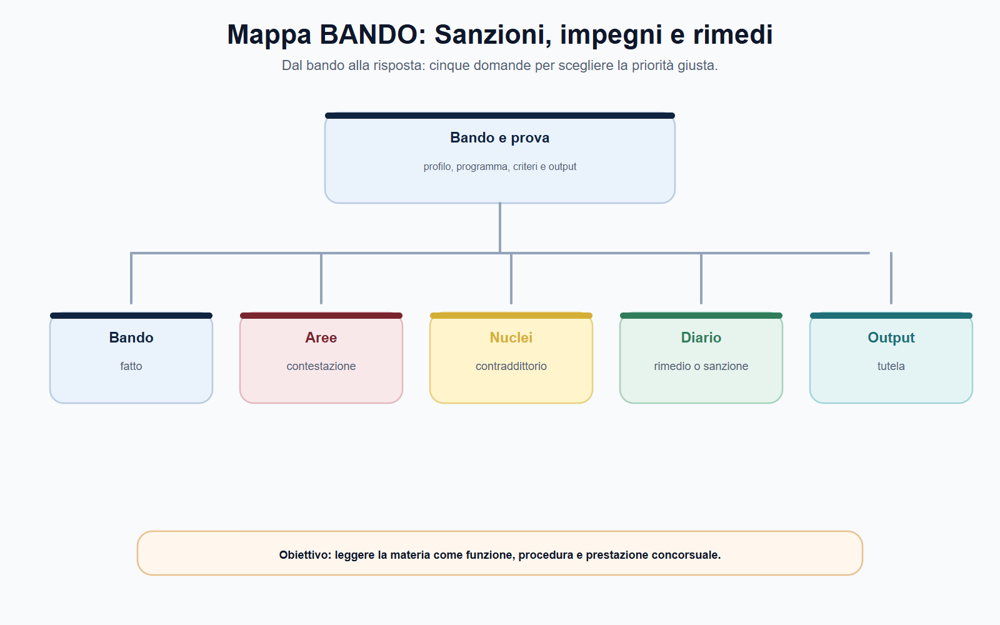
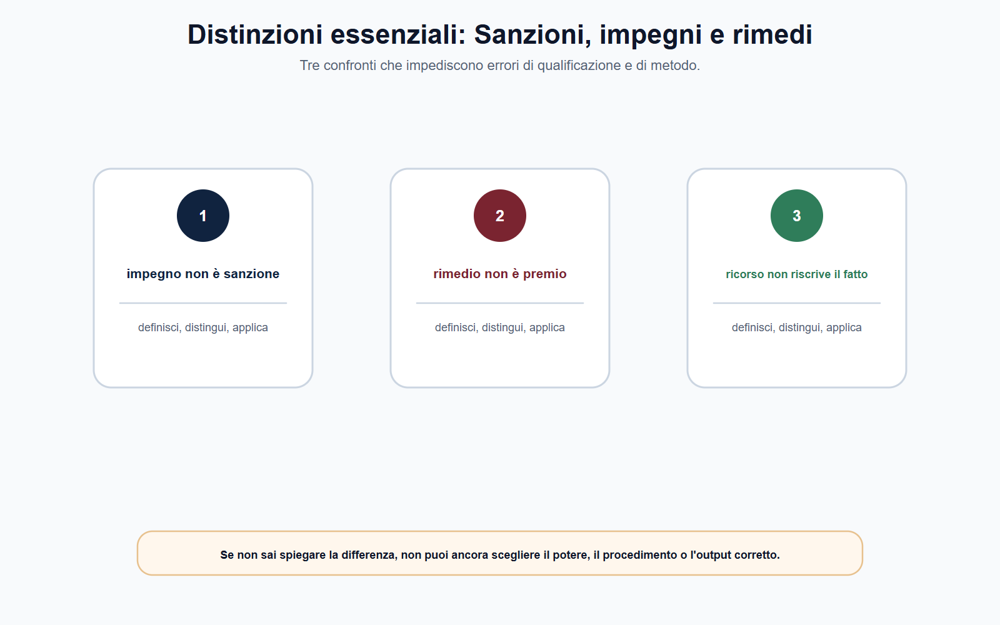
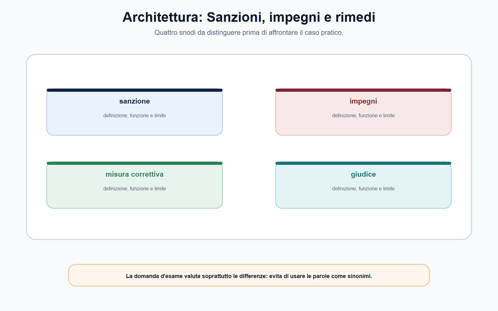
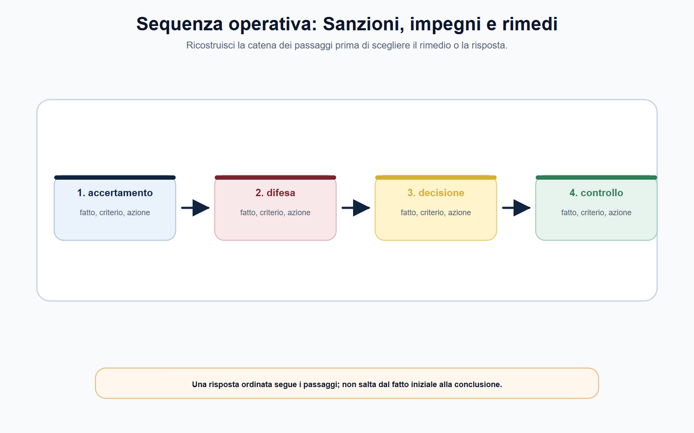

VOL-05 · Capitolo 06
M-FC05
Sanzioni,
impegni, rimedi e controllo giurisdizionale
La fase finale di un procedimento di vigilanza non coincide sempre con una sanzione. L’Autorità può accertare una violazione, ordinare una conformazione, valutare impegni o adottare, quando la legge lo consente, misure provvisorie. Ogni strumento ha presupposti, finalità e conseguenze proprie.
01 · Il problema in prova
Non è «controllo, quindi multa»
La scelta della risposta amministrativa è il punto di arrivo di una catena: competenza, norma, istruttoria, difesa, fatti, misura proporzionata, motivazione, comunicazione e controllo. Se un anello manca, il provvedimento è incompleto o non risponde al problema che lo ha generato.
Che cos’è questo capitolo
Insegna a riconoscere sanzione, impegno, rimedio correttivo e misura cautelare, e a mappare la tutela giurisdizionale senza esportare automaticamente un istituto da un’Autorità a un’altra.
A che serve in prova
A respingere tre confusioni: l’impegno come sanzione ridotta; il rimedio correttivo come multa; il ricorso come nuova istruttoria interna. Prima la fonte, poi lo strumento.
Non partire dall’etichetta della misura.
Parti da norma violata, fatto accertato, finalità del potere e disciplina dell’Autorità. Solo allora puoi stabilire se si tratta di sanzione, impegno, misura correttiva o altro rimedio.
02 · BANDO
Cinque decisioni su questo capitolo
Le espressioni «poteri sanzionatori», «impegni», «rimedi» e «contenzioso» richiedono una risposta strutturata, non un elenco di sanzioni.
| Che cosa fai | Se la salti | |
|---|---|---|
| B — Bando | Cerca procedimento sanzionatorio, impegni, rimedi, tutela e settore dell’Autorità. | Studi un catalogo di multe, non un potere. |
| A — Aree | Collega base legale, fatto, difesa, misura, monitoraggio e giudice. | Sovrapponi regimi settoriali diversi. |
| N — Nuclei | Sanzione ≠ impegno ≠ rimedio correttivo ≠ misura cautelare. | Tratti ogni chiusura come accertamento di infrazione. |
| D — Diario | Segna soglie inventate, rito unico, impegno = colpa. | Ripeti le tre trappole all’orale. |
| O — Output | Schema in sette passaggi, tabella impegno–sanzione, mappa della tutela senza termini non verificati. | Elenco di articoli senza decisione. |
03 · Schema
Dal bando alla misura
Prima di nominare la sanzione, fissi cinque domande: fatto, contestazione, contraddittorio, rimedio o sanzione, tutela. Lo schema non sostituisce la fonte: serve a non partire dall’etichetta.

Bando, aree, nuclei, diario, output: la sequenza da tenere ferma in ogni traccia su accertamento e misure.
04 · Garanzie
Dall’accertamento alla decisione
Una misura sanzionatoria o correttiva deve poggiare su un percorso leggibile. La legge n. 689/1981 orienta legalità, difesa e motivazione, ma non sostituisce le norme speciali delle Autorità. Prima si legge il settore, poi si usa il quadro generale.
| Passaggio | Domanda da porre | Controllo utile |
|---|---|---|
| Base del potere | Quale norma attribuisce la competenza e prevede la risposta? | Nota sulla fonte attributiva. |
| Fattispecie | Quale obbligo o divieto è stato violato? | Ricostruzione norma–condotta. |
| Istruttoria | Quali fatti sono provati e con quali elementi? | Fascicolo e nota di valutazione. |
| Difesa | Quali forme di contraddittorio sono previste? | Comunicazioni, deduzioni, audizioni. |
| Misura e motivazione | Perché questa risposta è adeguata e comprensibile? | Finalità, proporzionalità, schema logico. |
Non memorizzare importi, soglie o termini se non sono nella traccia e nel testo vigente. Una struttura corretta vale più di una lista di cifre tratta da un altro ordinamento.
05 · Distinzioni
Quattro strumenti, quattro funzioni
La tabella non afferma che ogni Autorità dispone di tutti gli strumenti. Serve a evitare quell’errore. Prima di scegliere la colonna, trovi la norma che la rende applicabile.
| Strumento | Funzione |
|---|---|
| Sanzione | Reagire a una violazione accertata. Non è automaticamente un rimedio conformativo. |
| Impegno | Rimuovere criticità nel settore che lo prevede. Nell’antitrust AGCM, art. 14-ter, non equivale all’accertamento dell’infrazione. |
| Rimedio correttivo | Conformare, cessare o correggere. Può coesistere con una sanzione, se la fonte lo consente. |
| Misura cautelare | Prevenire un pregiudizio nella fase prevista. Non anticipa automaticamente la decisione finale. |
Impegno non è sanzione; rimedio non è premio; il ricorso non riscrive il fatto.

06 · Sanzione
Conseguenza per una violazione accertata
Richiede violazione, destinatario, misura consentita e motivazione. La finalità preventiva non autorizza scorciatoie nell’accertamento. Quanto più incisiva è la misura, tanto più il provvedimento deve rendere intelligibili condotta, norma, prove, difese e dispositivo.
06 · Impegno
Istituto settoriale, non sconto
Deve essere riconosciuto dalla fonte. Nell’antitrust AGCM l’art. 14-ter della legge n. 287/1990 consente, se idonei, di renderli obbligatori e chiudere il procedimento senza accertare l’infrazione. Non è una confessione.
07 · Architettura
Quattro snodi prima del caso
Sanzione, impegni, misura correttiva e giudice non sono sinonimi. La domanda d’esame valuta soprattutto le differenze. Un impegno accettato non dimostra, di per sé, che il destinatario abbia commesso l’infrazione.

Quattro snodi da distinguere: definizione, funzione e limite di ciascuno.
08 · Sequenza
Accertamento, difesa, decisione, controllo
Una risposta ordinata segue i passaggi e non salta dal fatto alla conclusione. La proporzionalità chiede di spiegare perché la misura è idonea, necessaria nel contesto e non sproporzionata: non obbliga a scegliere sempre l’opzione meno onerosa.

Dal fatto alla misura: ogni passaggio ha un criterio e un’azione.
09 · Rimedi
Conformare non è sanzionare
Una decisione efficace non termina con il dispositivo. Se l’atto impone una conformazione, un divieto, un impegno o un obbligo informativo, l’Autorità deve poter verificare che l’effetto richiesto sia realmente prodotto.
Che cosa
Cosa deve fare o cessare di fare il destinatario. Senza perimetro la misura è indeterminata.
Come si verifica
Modalità e indicatori, se previsti, per controllare l’adempimento.
Se manca
Quale conseguenza deriva dall’inottemperanza secondo la fonte, non per analogia.
L’art. 58 del GDPR, nella lettura applicata dal Garante, mostra poteri correttivi e, nei casi previsti, sanzione pecuniaria. La complementarità non si trasferisce automaticamente ad AGCM, ARERA, CONSOB, IVASS o ANAC.
10 · Giurisdizione
Una tutela da mappare, non un rito unico
Il controllo giurisdizionale non è una prosecuzione dell’istruttoria. È la tutela contro l’atto o l’inerzia, davanti al giudice competente, con domanda, rito, termini ed eventuale cautela definiti dalla legge. Il Codice del processo amministrativo è il quadro generale: non autorizza a presumere lo stesso percorso per ogni Autorità.
| Passaggio | Domanda |
|---|---|
| Atto o inerzia | Quale provvedimento, misura o comportamento si contesta? |
| Posizione lesa | Quale interesse o diritto il ricorrente afferma pregiudicato? |
| Disciplina speciale | La legge dell’Autorità indica giudice, rito o regole particolari? |
| Domanda, cautela, esecuzione | Quale azione, quale tutela interinale, quale effetto della decisione? |
I termini e la sede non si memorizzano come formula universale. Si ricostruiscono da atto, fonte istitutiva e regole processuali applicabili.
11 · Caso guidato
Gli impegni non sono uno sconto
L’AGCM avvia un’istruttoria su criticità concorrenziali in un mercato di servizi digitali. L’impresa presenta un piano con modifiche contrattuali, obblighi di trasparenza e monitoraggio. Un candidato sostiene che, poiché ha presentato gli impegni, l’Autorità deve applicare una sanzione più bassa.
| Passaggio | Ragionamento |
|---|---|
| Fonte | Verificare se il caso rientra nell’art. 14-ter della legge n. 287/1990. |
| Idoneità | Gli impegni, se presentati nei termini, devono far venir meno i profili anticoncorrenziali oggetto dell’istruttoria. |
| Esito | Se resi obbligatori, il procedimento si chiude senza accertare l’infrazione. Non è una confessione né una richiesta di sconto. |
| Dopo | Monitoraggio, rispetto e, nei casi previsti, riapertura. La domanda non è «quanto sanzionare?». |
12 · Verifica
Due domande da saper spiegare
Distingua sanzioni, impegni e rimedi correttivi e illustri il controllo giurisdizionale.
La sanzione è la conseguenza prevista per una violazione accertata e richiede base legale, istruttoria, difesa, motivazione e proporzionalità. Gli impegni sono settoriali: nell’antitrust AGCM l’art. 14-ter può chiudere senza accertare l’infrazione. I rimedi correttivi mirano a conformare o cessare. Il giudice tutela contro l’atto secondo la disciplina applicabile; il CPA è quadro generale, non rito unico.
Un impegno accettato dimostra che il destinatario ha commesso l’infrazione?
Non necessariamente. Nel modello dell’art. 14-ter, gli impegni idonei possono rendere obbligatorie misure che rimuovono i profili anticoncorrenziali e chiudere il procedimento senza accertare l’infrazione. Occorre sempre verificare l’istituto previsto dalla fonte di settore.
13 · Mini-esercizio
Un obbligo non rispettato
«Un soggetto regolato non rispetta un obbligo previsto da un provvedimento dell’Autorità». Completa la matrice prima di proporre una sanzione.
| Campo | Che cosa deve risultare |
|---|---|
| Fonte dell’obbligo e del potere | Quale atto e quale norma attribuiscono il dovere e la risposta possibile. |
| Fatto e prove | Che cosa è accertato, con quali documenti, che cosa manca. |
| Garanzie | Quali forme di partecipazione e difesa sono previste. |
| Strumenti della fonte | Sanzione, rimedio, impegno, cautela: solo se previsti. |
| Motivazione e monitoraggio | Perché quella misura, e come se ne verifica il rispetto. |
| Tutela | Quale atto è impugnabile e quale giudice va verificato, senza termini inventati. |
L’esercizio è corretto se non scegli la sanzione prima di obbligo, fatto, potere e garanzie. Se la fonte prevede un rimedio diverso, cambia la fonte, non l’intuizione.
14 · Errori
Distinzioni da tenere ferme
Errore
«Dopo una sanzione dell’Autorità il ricorso segue sempre lo stesso giudice, lo stesso rito e gli stessi termini.»
Correzione
La tutela dipende da atto, fonte istitutiva, disciplina speciale e regole processuali. Il CPA offre il quadro generale, ma non autorizza una soluzione processuale uniforme.
Non inventare soglie, importi o termini. I dati mobili si verificano sul bando e sulla fonte ufficiale vigente. La finalità di tutela non attribuisce da sola qualsiasi potere di ottemperanza.
15 · Da tenere ferme
Cinque regole, con il perché
1. La sanzione richiede norma, fatto accertato, destinatario, garanzie e motivazione.
2. Impegno, rimedio correttivo e misura cautelare non sono sinonimi e non sono disponibili in ogni settore.
3. Nell’antitrust AGCM, gli impegni ex art. 14-ter possono chiudere il procedimento senza accertare l’infrazione.
4. Nel privacy, poteri correttivi e sanzione pecuniaria possono essere complementari: non è un modello da copiare su ogni Autorità.
5. Contro l’atto si verificano disciplina speciale, giudice, rito, termini e cautela: non esiste una formula processuale unica.
Prossimo capitolo
Economia industriale, regolazione, econometria e contabilità regolatoria
La misura è scelta. Il capitolo successivo insegna a leggere mercato, dati, incentivi e conti regolatori senza trasformare un indice in una prova.